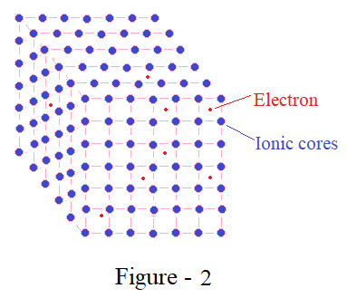

Look at Figure-1, which shows electron at rest in two metallic plates. Electron is shown in the circle shape with red colour and plates surrounding the electron are shown in blue colour. The terminals extended from the plates are named as terminal A and terminal B. We want to understand what would happen when voltage is applied between these two terminals. The voltage VAB shown to be applied between these two plates would create electric field between these two plates. The potential of plate A is higher with respect to potential of plate B. This voltage would establish electric field between two plates which is shown by black horizontal parallel lines, normal to the metallic plates. Intensity of this electric field is a ratio of potential applied between the plates and length of separation between them. The symbol used to represent electric field is shown in last line of parameters description, and symbol is ‘ℇ’. We can apply the newton’s second law to this situation which states that force is equal to mass into acceleration. The product of electric fields intensity ℇ and charge on electron e is the force that will be applied on the electron between the plates. The mass of electron is shown in the parameter list of the figure that we are considering now. In this way the ratio of force and mass is the acceleration applied by electric field on the electron. This acceleration is present at every point along the length ‘L’ which is separation between the plates. Since acceleration is rate of change of velocity, the velocity of electron shall continuously keep on increasing until electron reaches the positively charged plate. This phenomenon suggests us that if separation between two plates is sufficiently large and electric field intensity is also large, electron will be accelerated indefinitely.
We have illustrated the phenomenon of free electron between two plates to understand how electron in conducting materials will respond to externally applied electric field. First we will consider conducting material; these materials are in the crystalline form and have symmetrical arrangement of their atoms. This crystalline structure of conducting material is shown in Figure-2. We may compare the circumstances between two figures, in first figure electron is free to move but in second figure electron is surrounded by ionic cores. In addition to the applied external electric field, electric field is also setup by ionic cores. So when external voltage is applied, velocity could not increase indefinitely, but electrons experience elastic collision with ionic cores. Conductors and insulators are differentiated by number of free electrons available in the crystalline structure. Insulators have practically no free electrons available for conduction. In this way we can identify travel of electron consisting of large collisions before they move from one end of the conducting material to other. These collisions reduce the average velocity of electron to some finite value. Another effect of this movement of free electrons is the generation of heat in the conducting material. So if we compare two phenomenon in first case electron accelerates indefinitely but in second case electron velocity raises to some limited value. If we make the current to flow inside the insulating material, then practically current is zero due to absence of free electrons. In case of insulators electrons are tightly bound to their parent nucleus but in conducting materials electrons are loosely bound to their parent nucleus. Therefore electrons are said to form an electron gas inside the crystal structure and parent nucleus is not identifiable. When electrons pass through conducting material current is said to pass through the conductor. This current is rate of flow of charged particle that is electron. The property that decides how much current will flow through conductor is known as resistance of conductor. The same property as a specific resistance of material is known as resistivity of conducting material.
Now if we look at figure-3 then we see a specimen of a conducting material. The geometry of this specimen is required to calculate its resistance. The specimen have got length l and cross sectional area A, when we apply voltage between its two terminals current flows along length l and it crosses the cross sectional area A. The voltage applied across this specimen is shown to be VCD and current passing through this specimen is I. These two parameters voltage and current are related to each other by a constant of proportionality, whose value is R. This relation between current and voltage is shown by mathematical equation VCD = R * I. This relation is known as ohms law. Although we are considering R resistance as constant of proportionality on absolute grounds physically it is not constant but increases with temperature. This increase in resistance is due to increase in the vibrations of atoms of conducting material due to increase in internal heat energy.
If we look at the equation corresponding to ohms law then it may be further analysed by using equation written below it. In this next equation resistance is further refactored in terms of its dimensions. This replaced factor for resistance suggests us that resistance increases with increase in length but decreases with increase in cross sectional area. The constant connects resistance with its dimensional values is known as resistivity or specific resistance.
Further resistance is an important element in the electric circuit and schematically represented by the figure that is shown below the specimen resistor. This schematic way of representing resistor is useful and universally used to represent in the circuit. Resistance is not only assigned to conducting material but is also assigned to insulating materials. Conducting materials are found in electrical equipment in the form of wires and bus bars. Their length is comparatively large and cross section is small. But in case of insulating material these are found in the form of sheets and ribbons. In case of insulating materials length is small and cross section is large. If we compare the resistivity of conducting material with resistivity of insulating material then we see that there is logarithmic difference between them. For example conducting material have these values of the order of 1e-8 and for insulating material it is of the order of 1e20 for same dimensions.
Now we will consider the effect of temperature on resistance of conducting materials. Consider the equation written in Figure-4, this equation relates change in the resistivity of conducting material from its initial value. Initial value have got zero subscript and final value have got subscript ‘t’. When temperature of conducting material raises by ‘t’ degree centigrade then the raise in resistivity is decided by temperature coefficient of resistance which is symbolised by alpha with subscript t. The value of temperature coefficient of resistance is quite small, so raise in resistance is also small that is of the order of 0.4% for copper. The equation for resistivity of copper is readily applicable to resistance that shown in the next equation below the resistivity equation. If we look at first equation of resistivity and consider zero temperature raise then it gives equality between initial and final value.
The four bullet points in Figure-4, explains actual resistivity value of copper, temperature coefficient of resistance and actual values of resistance of sample wire. If we consider resistivity of copper it is shown to be 16.8e-9 ohms meters, this value is extremely small since it is a resistance of one meter cube. Similarly temperature coefficient of resistance is 0.00386 which is approximately 0.4%. Next bullet point gives dimensions of sample wire which is one meter by one square mili-meter cross section. Resistance of this sample copper wire calculates to 16.8 mili-ohms. We may note such small value of resistance that justifies copper is good conductor of electricity. Further if we apply 1 volt of supply to this conductor for few seconds it will carry 60 amperes of current. The last bullet point calculate change in resistance if temperature of sample raises from 20 to 65 degree centigrade. The value of resistance comes out to be 19.74 mili-ohms.
When dc voltage source supplies power to single resistor we may consider various parameters associated with this phenomenon. It is important to note that resistance is a bidirectional element. This means irrespective of positive terminal of dc source is connected to one end of resistor or other end of resistance will not affect the response of resistor in any way. As we saw in our specimen sample positive terminal is connected to terminal C or D and other terminal connected to D or C respectively will not alter the process or passing the current.
Consider the graphs drawn Figure-5. In the first graph voltage is constant with respect to time, time is on x-axis and voltage is on y-axis. Since, voltage do not change with respect to time, current also do not change with respect to time. This response is as result of constant resistance. The ohms law which we have seen earlier is responsible for such relation between voltage and current. The product of voltage and current is power, since both voltage and current are constant with respect to time power is also constant with respect to time. The power graph is shown after current graph which is constant at all instances of time until supply is connected to load. The power graph is filled with colour because product of power and time is energy. Another way of looking at power is rate at which energy is supplied to the load.
For some reason power graph is not horizontal then also area under the curve is energy and ordinate is instantaneous power. The unit of energy which we know from our electric bill is in KWh, which is product of voltage, current and time. But in our example the unit could be Watt-sec
Now look at Figure-6 where interconnection of resistors is shown, in first circuit diagram two resistors are connected in series. Let for example each of them is of 5 ohms value then their series combination will result in 10 ohms resistor. This 10 ohms resistor is called as equivalent resistance of series combination of two resistors. Corresponding equation shows the same sum of two resistors. This series combination could be extended to more than two resistors.
Next circuit after series circuit is parallel combination of two resistors. In case of parallel combination if we consider equivalent conductance of two resistors is sum of individual conductance. Conductance is reciprocal of resistor value. But for two resistors product in numerator and sum in denominator is more suitable. Such equation is shown for parallel combination.